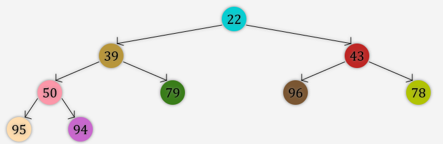

Zadanie 4
Pytanie: Jeżeli do poniżej przedstawionego kopca binarnego chcielibyśmy dodać węzeł o wartości klucza = 50, to na jakiej pozycji znajdowałby się on po dodaniu?

Odpowiedzi:
A) Jako prawy potomek węzła o wartości klucza = 39.
B) Jako lewy potomek węzła o wartości klucza = 79.
C) Jako prawy potomek węzła o wartości klucza = 79
D) Nie można dodać kolejnego węzła o wartości klucza = 50.